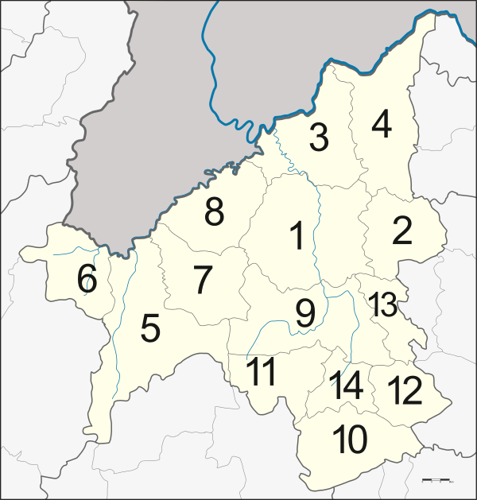
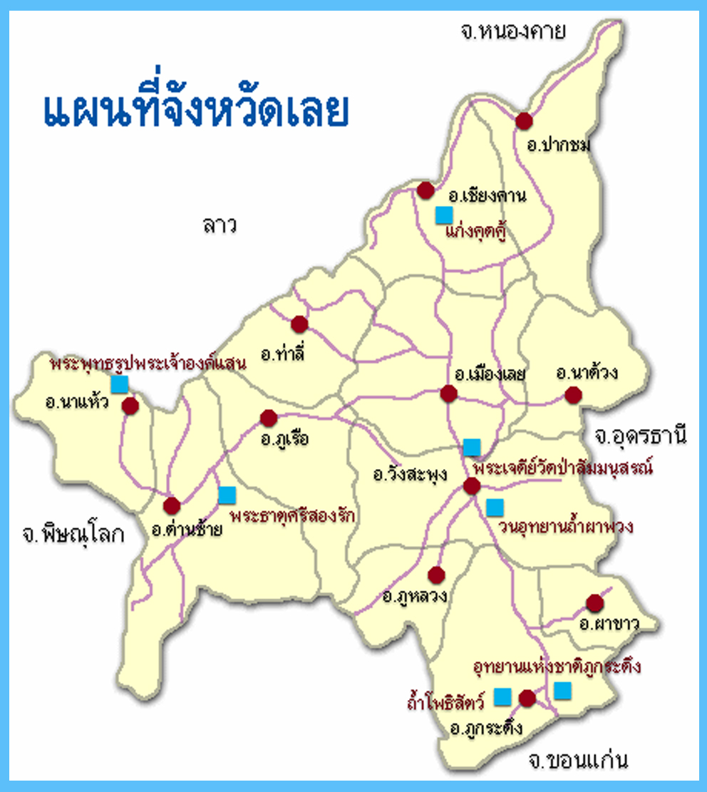

สำหรับเมืองเลยซึ่งขึ้นอยู่ใน มณฑลลาวพวน (มณฑลอุดร) ได้มีอำเภอขึ้นอยู่ในปกครองครั้งแรกรวม ๓ อำเภอ คือ อำเภอกุดป่อง (อำเภอเมืองเลย) อำเภอท่าลี่ (พ.ศ.๒๔๓๒) และอำเภอนากอก ส่วนอำเภอนากอกที่อยู่ในเขตการปกครองของเมืองเลยนั้น เดิมอยู่ในแขวงไชยบุรีในปี พ.ศ.๒๔๓๖ (ร.ศ.๑๑๒) เมื่อฝรั่งเศสเข้ามายึดครองเอาดินแดนฝั่งซ้ายแม่น้ำโขงของประเทศไทยไปหมด และยังได้ข้ามมายึดครองเอา บริเวณแขวงไชยบุรีของไทยที่อยู่ทางฝั่งขวาแม่น้ำโขงไปอีก อำเภอนากอก ที่อยู่ในแขวงไชยบุรี จึงตกเป็นของ ฝรั่งเศสด้วย ด้วยเหตุดังกล่าว เมืองเลยจึงตั้งบ้านอาฮีที่อยู่ทางฝั่งขวาแม่น้ำเหืองของไทยขึ้นเป็นอำเภออาฮีแทน อำเภอนากอกเป็นการชั่วคราว (อำเภอนากอก ปัจจุบันคือ บ้านนากอก หรือบ้านกอก แขวงไชยบุรี ประเทศสาธารณ รัฐประชาธิปไตยประชาชนลาว) ต่อมาเมื่อได้มีการแก้ไขการปกครองให้เป็นแบบเทศาภิบาลที่สมบูรณ์ ได้ยุบอำเภออาฮีลงเป็นตำบลอาฮีขึ้น อยู่ในการปกครองของอำเภอท่าลี่ ได้มีการโอนอำเภอต่าง ๆ ให้ขึ้นอยู่ในการปกครองของเมืองเลย เช่น อำเภอด่านซ้าย เมืองพิษณุโลก อำเภอเชียงคาน จากเมืองพิชัย และยกฐานะแขวงวังสะพุงขึ้นเป็นอำเภอ วังสะพุงโอนจากเมืองหล่มสัก เมืองเลยจึงมีอำเภอเกิดขึ้นในระหว่างนั้น รวม ๕ อำเภอ คือ อำเภอเมืองเลย อำเภอท่าลี่ อำเภอด่านซ้าย อำเภอเชียงคาน อำเภอด่านซ้ายและอำเภอวังสะพุง
จังหวัดเลยแบ่งการปกครองออกเป็น 14 อำเภอ 90 ตำบล 840 หมู่บ้าน
ต้นไม้ประจำจังหวัด: สนสามใบ (Pinus kesiya)
คำขวัญประจำจังหวัด: เมืองแห่งทะเลภูเขา สุดหนาวในสยาม ดอกไม้งามสามฤดู ถิ่นที่อยู่อริยสงฆ์ มั่นคงความสะอาด
ลักษณะรูปร่างของจังหวัดเลย: ลักษณะรูปร่างของจังหวัดเลยมีรูปร่างคล้ายกับ
"ศีรษะของลูกไดโนเสาร์พันธุ์ไทรเซอราทอปส์ที่ไม่มีเขา"
| ลำดับ | ชื่ออำเภอ | จำนวนตำบล | รหัสไปรษณีย์ |
|---|---|---|---|
| 1 | เมืองเลย | 14 | 42000,42100 |
| 2 | นาด้วง | 4 | 42210 |
| 3 | เชียงคาน | 8 | 42110 |
| 4 | ปากชม | 6 | 42150 |
| 5 | ด่านซ้าย | 10 | 42120 |
| 6 | นาแห้ว | 5 | 42170 |
ลักษณะภูมิประเทศ จังหวัดเลยตั้งอยู่บนพื้นที่ราบสูงโคราช หรือที่เรียกกันว่า แอ่งสกลนคร ลักษณะภูมิประเทศส่วนใหญ่เป็นทิวเขาในแนวทางทิศเหนือใต้ และจะมีพื้นที่ราบลุ่มระหว่างหุบเขาที่ไม่ใหญ่มากนัก สลับกันอยู่ในแนวเทือกเขา จังหวัดเลยมีภูเขาสูงกระจัดกระจาย โดยเฉพาะทางตะวันตกและทางด้านใต้ของจังหวัด ทั้งนี้ยังมีแหล่งน้ำสำคัญคือแม่น้ำโขงในบริเวณตอนบนของจังหวัด ลักษณะภูมิอากาศ จังหวัดเลยเป็นจังหวัดที่เรียกได้ว่าหนาวที่สุดของประเทศ เคยมีอุณหภูมิต่ำสุดประมาณ -1.3 องศาเซลเซียส (2 มกราคม พ.ศ. 2517) อุณหภูมิสูงสุดประมาณ 43.5 องศาเซลเซียส (25 เมษายน พ.ศ. 2517) อุณหภูมิเฉลี่ยตลอดทั้งปีอยู่ที่ประมาณ 25.5-26.5 องศาเซลเซียส และจะมีอุณหภูมิที่หนาวจัดในช่วงระหว่างเดือนธันวาคม-มกราคม โดยช่วง 10 ปีที่ผ่านมา อุณหภูมิต่ำสุดประมาณ 5.5 องศาเซลเซียส (พ.ศ. 2557)